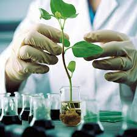
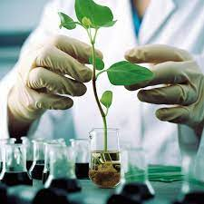
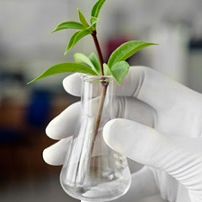
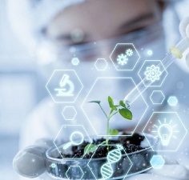
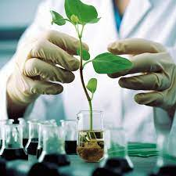
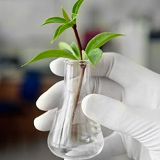
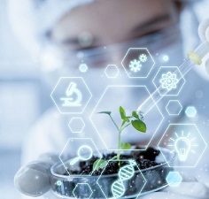

¿Que es la Bio?
La biotecnología es una rama de la ciencia que combina y la tecnología para mejorar la calidad de vida de las personas.
Utiliza células vivas o cualquiera de sus componentes para desarrollar productos con fines concretos.
La biotecnología es un conjunto de técnicas que utiliza células vivas, cultivo de tejidos o moléculas derivadas de un organismo, por ejemplo, enzimas, para obtener o modificar un producto, mejorar una planta o un animal o desarrollar un microorganismo para utilizarlo con un propósito específico.
Se trata de procesos tecnológicos asociados a organismos vivos y a los procesos biológicos (por ejemplo, fermentación de determinados productos, utilización tecnológica de enzimas, producción de proteínas recombinantes).
Esta actividad se apoya sobre el conocimiento de determinados procesos biológicos básicos (biología molecular y genética) y ofrece instrumentos para el desarrollo de la agricultura, la pesca, la actividad forestal y las industrias alimentarias de manera sostenible. Cuando se integra debidamente con otras tecnologías para la producción de alimentos, productos agrícolas y servicios, la biotecnología es una herramienta de gran importancia para satisfacer las necesidades de una población en crecimiento.
 

La biotecnología (del griego βίος bíos, ‘vida’, τέχνη téchne, ‘destreza’ y -λογία -loguía, ‘tratado, estudio, ciencia’) es una amplia rama interdisciplinaria de las ciencias biológicas que consiste en toda aplicación tecnológica que utilice sistemas biológicos y organismos vivos o sus derivados para la creación o modificación de productos o procesos para usos específicos. Dichos organismos pueden o no estar modificados genéticamente, por lo que no hay que confundir Biotecnología con Ingeniería Genética. La Organización para la Cooperación y el Desarrollo Económico (OCDE) define la biotecnología como la «aplicación de principios de la matemáticas y la ingeniería para tratamientos de materiales orgánicos e inorgánicos por sistemas biológicos para producir bienes y servicios». Sus bases son la biología, ingeniería, física, química, y biomedicina; y el campo de esta ciencia tiene gran repercusión en la farmacología, la medicina, la bromatología, el tratamiento de residuos sólidos, líquidos y gaseosos, la industria, la ganadería y la agricultura.
Así también, la Biotechnology Innovation Organization indica que la biotecnología es tecnología basada en la biología, que utiliza procesos celulares y biomoleculares para crear productos y tecnologías que mejoren tanto nuestra calidad de vida como la salud del planeta. Lo cierto es que, durante más de 6.000 años, hemos producido una variedad de alimentos útiles como pan, queso y entre otros, mediante tales procesos biológicos de microorganismos, además de otros bienes o productos útiles.
Probablemente el término fue acuñado por el ingeniero húngaro Károly Ereki, en 1919, cuando lo introdujo en su libro Biotecnología en la producción cárnica y láctea de una gran explotación agropecuaria.
Según el Convenio sobre Diversidad Biológica de 1992, la biotecnología podría definirse como «toda aplicación tecnológica que utilice sistemas biológicos y organismos vivos o sus derivados para la creación o modificación de productos o procesos para usos específicos».
El Protocolo de Cartagena sobre Seguridad de la Biotecnología del Convenio sobre la Diversidad Biológica define la biotecnología moderna como la aplicación de:
Técnicas in vitro de ácido nucleico, incluidos el ácido desoxirribonucleico (ADN) recombinante y la inyección directa de ácido nucleico en células u orgánulos.
La fusión de células más allá de la familia taxonómica, que supere las barreras fisiológicas naturales de la reproducción o de la recombinación y que no sean técnicas utilizadas en la reproducción y selección tradicionales.
La experiencia reciente ha demostrado que se pueden obtener con una baja probabilidad resultados aleatorios no reproducibles en el proceso de modificación génica, por lo que la comunidad científica se está postulando por la clasificación específica de este tipo de productos y la creación de un protocolo que garantice la seguridad de todos los supuestos resultados inesperados probables.


La biotecnología es una rama de la ciencia que combina y la tecnología para mejorar la calidad de vida de las personas. Utiliza células vivas o cualquiera de sus componentes para desarrollar productos con fines concretos. La biotecnología es un conjunto de técnicas que utiliza células vivas, cultivo de tejidos o moléculas derivadas de un organismo, por ejemplo, enzimas, para obtener o modificar un producto, mejorar una planta o un animal o desarrollar un microorganismo para utilizarlo con un propósito específico. Se trata de procesos tecnológicos asociados a organismos vivos y a los procesos biológicos (por ejemplo, fermentación de determinados productos, utilización tecnológica de enzimas, producción de proteínas recombinantes). Esta actividad se apoya sobre el conocimiento de determinados procesos biológicos básicos (biología molecular y genética) y ofrece instrumentos para el desarrollo de la agricultura, la pesca, la actividad forestal y las industrias alimentarias de manera sostenible. Cuando se integra debidamente con otras tecnologías para la producción de alimentos, productos agrícolas y servicios, la biotecnología es una herramienta de gran importancia para satisfacer las necesidades de una población en crecimiento.

La biotecnología (del griego βίος bíos, ‘vida’, τέχνη téchne, ‘destreza’ y -λογία -loguía, ‘tratado, estudio, ciencia’) es una amplia rama interdisciplinaria de las ciencias biológicas que consiste en toda aplicación tecnológica que utilice sistemas biológicos y organismos vivos o sus derivados para la creación o modificación de productos o procesos para usos específicos. Dichos organismos pueden o no estar modificados genéticamente, por lo que no hay que confundir Biotecnología con Ingeniería Genética. La Organización para la Cooperación y el Desarrollo Económico (OCDE) define la biotecnología como la «aplicación de principios de la matemáticas y la ingeniería para tratamientos de materiales orgánicos e inorgánicos por sistemas biológicos para producir bienes y servicios». Sus bases son la biología, ingeniería, física, química, y biomedicina; y el campo de esta ciencia tiene gran repercusión en la farmacología, la medicina, la bromatología, el tratamiento de residuos sólidos, líquidos y gaseosos, la industria, la ganadería y la agricultura. Así también, la Biotechnology Innovation Organization indica que la biotecnología es tecnología basada en la biología, que utiliza procesos celulares y biomoleculares para crear productos y tecnologías que mejoren tanto nuestra calidad de vida como la salud del planeta. Lo cierto es que, durante más de 6.000 años, hemos producido una variedad de alimentos útiles como pan, queso y entre otros, mediante tales procesos biológicos de microorganismos, además de otros bienes o productos útiles. Probablemente el término fue acuñado por el ingeniero húngaro Károly Ereki, en 1919, cuando lo introdujo en su libro Biotecnología en la producción cárnica y láctea de una gran explotación agropecuaria. Según el Convenio sobre Diversidad Biológica de 1992, la biotecnología podría definirse como «toda aplicación tecnológica que utilice sistemas biológicos y organismos vivos o sus derivados para la creación o modificación de productos o procesos para usos específicos». El Protocolo de Cartagena sobre Seguridad de la Biotecnología del Convenio sobre la Diversidad Biológica define la biotecnología moderna como la aplicación de: Técnicas in vitro de ácido nucleico, incluidos el ácido desoxirribonucleico (ADN) recombinante y la inyección directa de ácido nucleico en células u orgánulos. La fusión de células más allá de la familia taxonómica, que supere las barreras fisiológicas naturales de la reproducción o de la recombinación y que no sean técnicas utilizadas en la reproducción y selección tradicionales. La experiencia reciente ha demostrado que se pueden obtener con una baja probabilidad resultados aleatorios no reproducibles en el proceso de modificación génica, por lo que la comunidad científica se está postulando por la clasificación específica de este tipo de productos y la creación de un protocolo que garantice la seguridad de todos los supuestos resultados inesperados probables.

